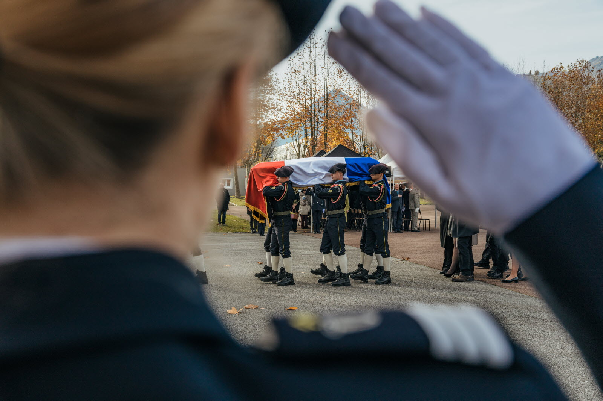
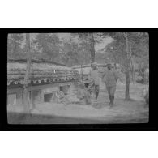
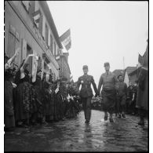
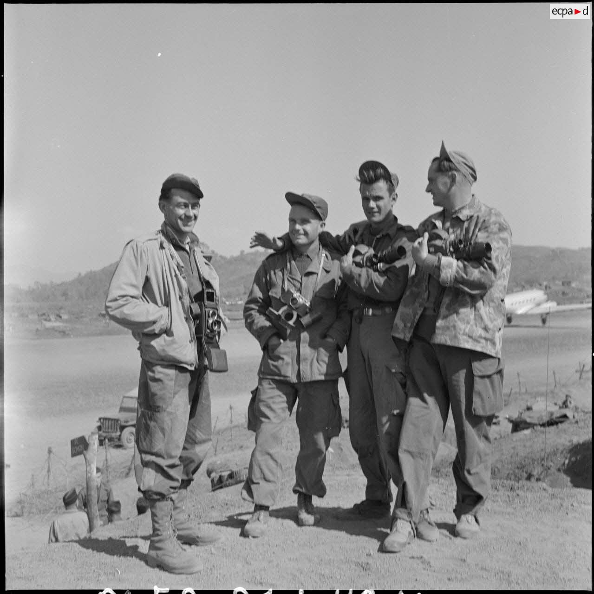
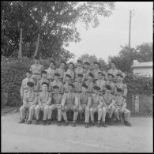

En mémoire de ceux qui ont donné leur vie pour la France
Cette page est dédiée à la mémoire des soldats français tombés pour la défense de la patrie. Leur sacrifice ne sera jamais oublié.

Plus de 1,4 million de soldats français ont perdu la vie durant la Grande Guerre.
Dans les tranchées de Verdun, sur la Somme, dans la Marne, des millions d'hommes ont combattu avec courage pour défendre la liberté. Leur sacrifice a permis la victoire et la préservation de notre nation.
"Ils ne passeront pas" - Devise de Verdun
Plus de 600 000 militaires et civils français ont péri durant ce conflit mondial.
Des plages de Normandie aux maquis de la Résistance, de l'Afrique du Nord à l'Alsace, les forces françaises libres et les résistants ont lutté sans relâche pour libérer la France et l'Europe du joug nazi.
"La France a perdu une bataille, mais la France n'a pas perdu la guerre" - Charles de Gaulle


Plus de 100 000 militaires français et alliés ont perdu la vie en Indochine.
De la bataille de Diên Biên Phu aux combats dans la jungle, les soldats français ont affronté des conditions extrêmes. Leur sacrifice témoigne de leur dévouement et de leur courage face à l'adversité.
Plus de 30 000 militaires français ont perdu la vie durant ce conflit.
Dans les djebels et les villes d'Algérie, des milliers de soldats ont servi avec honneur. Leur mémoire demeure vivante dans le cœur de la nation.

Plusieurs centaines de soldats français sont tombés en opérations extérieures.
Du Liban au Mali, de l'Afghanistan à la Centrafrique, nos soldats continuent de servir la France et de défendre la paix dans le monde. Chaque sacrifice rappelle le prix de la liberté.
"Mort pour la France"
Monument emblématique dédié aux armées françaises. La tombe du Soldat Inconnu repose sous l'Arc, symbolisant tous les soldats morts pour la France.
Mémorial de la bataille de Verdun, il abrite les restes de plus de 130 000 soldats français et allemands non identifiés.
Hôtel national des Invalides, lieu de mémoire et de recueillement dédié aux blessés de guerre et aux soldats tombés au combat.
"Ils sont morts pour que nous puissions vivre libres. Leur sacrifice ne sera jamais oublié. À tous les soldats tombés pour la France, nous rendons hommage."
Honneur et Patrie